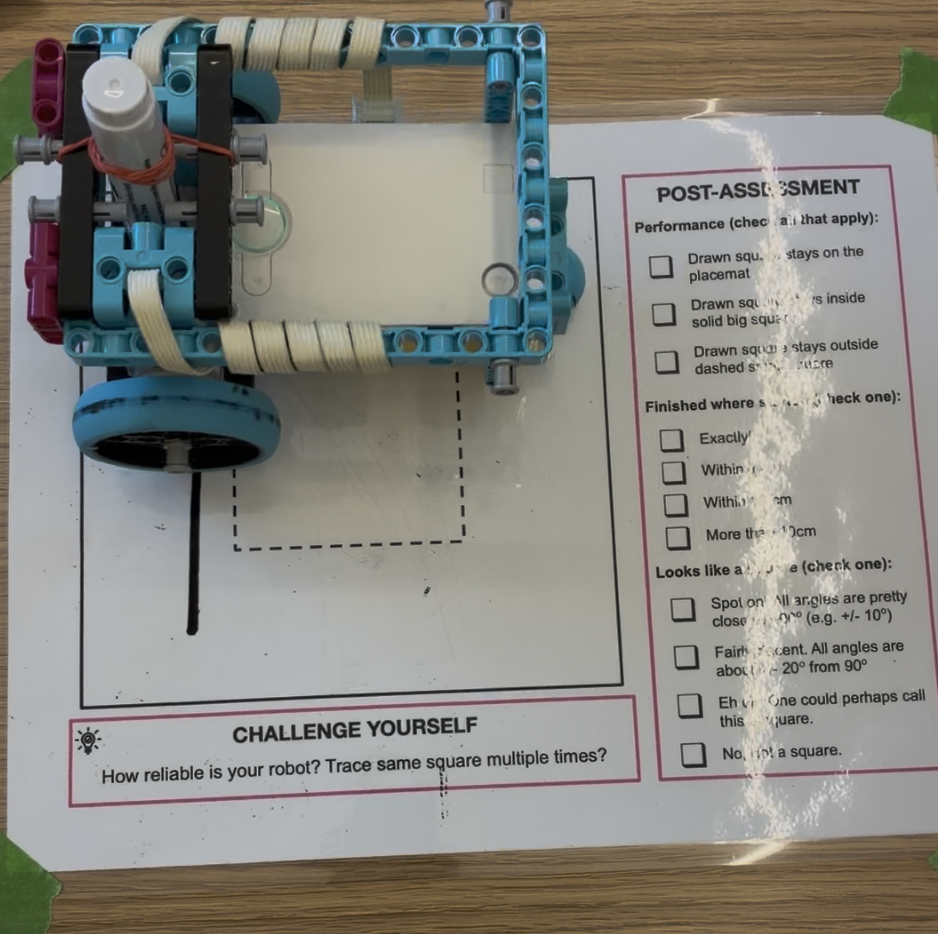
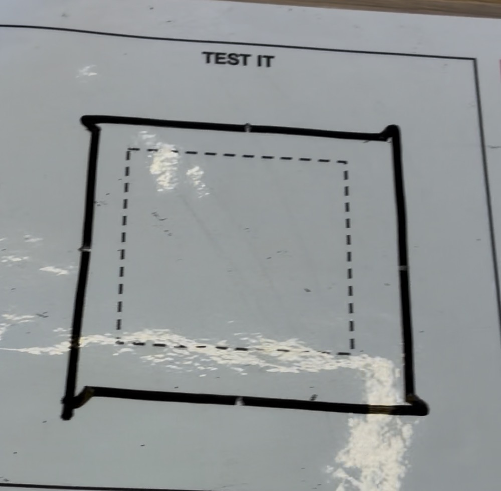
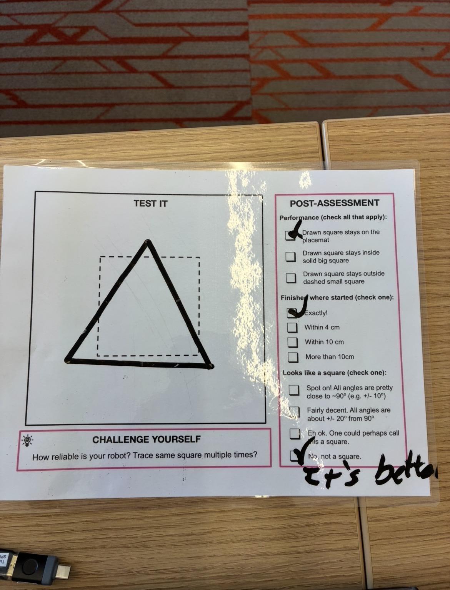

For this project, the task was simple: draw a square. The only catch is that we had to draw it using our SPIKE Prime Lego kits.
In order to complete this project, I decided to build a small car that could draw n' drive. It was important to not rely on hard coding the amount the motors would need to turn for the spin.

Here's an amazing square the robot was able to draw. Definitely a square. A three-sided square.
